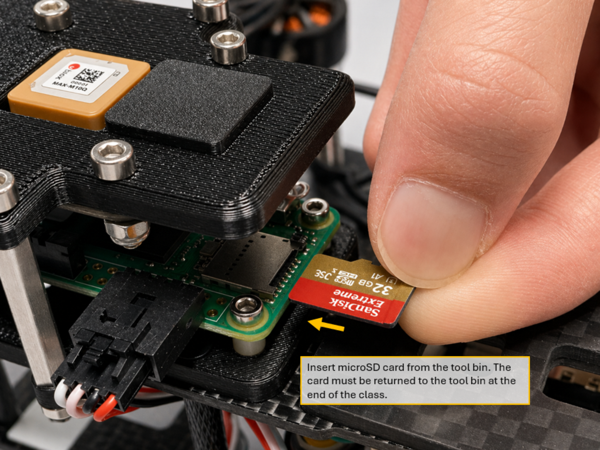

Task 13: Sensor calibration
Calibrate the accelerometer and compass, enter the measured battery voltage in Mission Planner, and adjust camera focus.
Parts required
- Vehicle with the motors, FC/ESC stack, and camera/GPS mount installed
- 4S LiPo battery
Tools required
- USB-C cable
- PC running Mission Planner
- LiPo battery voltage tester
- Issued microSD card
Step 1. Calibrate the accelerometer
- Open SETUP → Mandatory Hardware → Accel Calibration in Mission Planner.
- Place the aircraft on a flat, stable surface with the propellers removed and the LiPo disconnected.
- Start the calibration and follow the prompts for all six orientations: level, left side down, right side down, nose down, nose up, and upside down.
- Hold the aircraft still for each orientation until Mission Planner confirms the step.
Stable surface.
Use a rigid, level bench. Do not calibrate on a soft mat or while touching the aircraft.
Use a rigid, level bench. Do not calibrate on a soft mat or while touching the aircraft.
Step 2. Calibrate the compass
- Open SETUP → Mandatory Hardware → Compass.
- Under Onboard Mag Calibration, select Start.
- Rotate the aircraft slowly and smoothly about all three axes until the calibration completes. Use the embedded reference video as the motion guide.
- If Mission Planner requests a reboot after a successful calibration, select Reboot and reconnect.
Keep clear of metal.
Do not calibrate near large metal objects, computers, power supplies, or tool piles that can disturb the compass.
Do not calibrate near large metal objects, computers, power supplies, or tool piles that can disturb the compass.
Fig. 13a. Compass calibration motion reference. Courtesy: CDT Brenna Payne, USMA Class of 2028.
Step 3. Enter the measured battery voltage
- Connect the 4S LiPo battery.
- Measure the total battery voltage with the LiPo battery tester using the white balance connector.
- Open SETUP → Optional Hardware → Battery Monitor.
- Enter the measured total voltage in the Measured battery voltage field.
- Disconnect the battery when finished.
Propellers remain off.
Do not install the propellers until after Task 15.
Do not install the propellers until after Task 15.
Step 4. Adjust camera lens focus
- Gently install the issued microSD card into the slot on the rear of the Raspberry Pi Zero and power up the drone.
- Power down the flight controller completely by disconnecting the USB-C cable and battery, and then reconnect the battery.
- Connect to the Wi-Fi hotspot named HAMR #nn xx:xx:xx:xx:xx:xx, where nn is the team number dialed in with the SIP switches and xx:xx:xx:xx:xx:xx is the Raspberry Pi MAC address. Get the password from your instructor.
- Open a browser and go to
10.42.0.1:8889/cam/. - Use the white lens-adjustment tool to engage the camera lens from the front.
- Rotate the lens gently to adjust focus.
- Set the focus so that objects on the far side of the classroom are sharp. Do not focus on objects directly in front of the drone.
- Power off the drone and return the issued microSD card to the SD adapter, and then return it to the tool bin.
MAC address.
A MAC address is the hardware identifier of a network interface. It is intended to be unique. Here, the MAC-address portion of the hotspot name helps distinguish one Raspberry Pi hotspot from another, even if two teams accidentally select the same team number.
A MAC address is the hardware identifier of a network interface. It is intended to be unique. Here, the MAC-address portion of the hotspot name helps distinguish one Raspberry Pi hotspot from another, even if two teams accidentally select the same team number.

Fig. 13b. Insert the issued microSD card into the Raspberry Pi Zero. Return the card to the tool bin at the end of class.
Focus target.
This camera is meant to view the environment ahead of the aircraft. Focus on the far end of the classroom, not on objects a few inches from the lens.
This camera is meant to view the environment ahead of the aircraft. Focus on the far end of the classroom, not on objects a few inches from the lens.
Common errors
- Calibrating the accelerometer on a non-level or soft surface.
- Moving the aircraft before Mission Planner confirms an orientation.
- Rotating too quickly during compass calibration.
- Calibrating near metal objects or powered electronics that distort the compass.
- Entering a single-cell voltage instead of the total battery voltage.
- Leaving the LiPo battery connected after the task is complete.
- Focusing on nearby objects instead of the far side of the room.
- Connecting to the wrong hotspot because the team number or MAC address was read incorrectly.
- Forcing the lens with the adjustment tool instead of turning it gently.